2020年北京市中考化学试题 原卷解析
2020年北京市中考化学考试试卷
1.本试卷共6页，共两部分，24道小题，满分45分。考试时间：与生物合计90分钟。
2.在试卷和草槁纸上准确写姓名、准考证号、考场号和座位号。
3.试题答案一律填涂或书写在答题卡上，在试卷上作答无效。
4.在答题卡上，选择题、画图题用2B铅笔作答，其它试题用黑色字迹签字笔作答。
5.考试结束，将本试卷、答题卡和草稿纸一并交回。
可能用到的相对原子质量：H1 C12 O16 S32 Na23 Cl35.5
第一部分（选择题共12分）
每小题1分。在每小题给出的四个选项中，选出最符合题目要求的一项。
1. 为预防骨质疏松，应给人体补充的元素是
A. 钙B. 铁C. 锌D. 碘
【答案】A
【解析】
【详解】A、骨质疏松是由骨组织中钙盐流失引起的骨病，缺钙就容易发生骨质疏松，因此补钙可以预防骨质疏松，选项A正确；
B、人体缺铁会得缺铁性贫血，与骨质疏松无关，选项B不正确；
C、缺锌会影响人体发育，与骨质疏松无关，选项C不正确；
D、人体缺碘会引起甲状腺肿大，幼儿缺碘会影响生长发育，与骨质疏松无关，选项D不正确。故选A。
2.下列气体中，能供给动植物呼吸的是
A. O2B. H2C. N2D. CO2
【答案】A
【解析】
【详解】A、氧气的用途是支持燃烧和供给呼吸，故A正确；
B、氢气不能供给呼吸，故B错误；
C、氮气化学性质稳定，也不能供给呼吸，故C错误；
D、二氧化碳既不能燃烧也不能支持燃烧，还不能供给呼吸，故D错误。故选A。
3.下列含金属元素的物质是
A. H2SB. P2O5C. AgNO3D. H2O
【答案】C
【解析】
【详解】A、H2S中氢元素、硫元素均为非金属元素，不符合题意；
B、P2O5中磷元素、氧元素均为非金属元素，不符合题意；
C、AgNO3中银元素为金属元素，符合题意；
D、H2O中氢元素、氧元素均为非金属元素，不符合题意；
故选：C
4.下列不属于铁丝在氧气中燃烧现象的是
A. 放出热量B. 产生大量白烟
C. 火星四射D. 生成黑色固体
【答案】B
【解析】
【详解】铁丝在氧气中燃烧，火星四射，放出热量，生成黑色固体；不会产生大量白烟。
故选：B。
5.下列操作不正确的是
A. 稀释浓硫酸 B. 点燃酒精灯
B. 点燃酒精灯
C. 加热液体 D. 取用固体粉末
D. 取用固体粉末
【答案】B
【解析】
【详解】A、浓硫酸稀释时，常将浓硫酸沿器壁慢慢注入水中，并不断搅拌，使稀释产生的热量及时散出，图示正确，不符合题意。
B、用燃着的酒精灯去点燃另一个酒精灯存在安全隐患，酒精灯的酒精容易溢出，造成火灾等不可控的后果，图示错误，符合题意。
C、给试管中的液体加热时，使用注意事项：1、用试管夹或铁架台上的铁夹夹持试管时，应夹在离试管口 处，以便于加热或观察。试管内盛放的液体，不加热时不超过试管的
处，以便于加热或观察。试管内盛放的液体，不加热时不超过试管的 ，以便振荡，加热时不超过试管的，防止液体冲出。给液体加热时应将试管倾斜成45°以扩大受热面；给固体加热时，管口略下倾斜，防止冷凝水回流而使试管炸裂，图示正确，不符合题意。
，以便振荡，加热时不超过试管的，防止液体冲出。给液体加热时应将试管倾斜成45°以扩大受热面；给固体加热时，管口略下倾斜，防止冷凝水回流而使试管炸裂，图示正确，不符合题意。
D、取用粉末状药品，试管横放，用药匙或纸槽把药品送到试管底部，图示正确，不符合题意。
故选B。
6.下列不能与稀盐酸反应的金属是
A. CuB. ZnC. AlD. Mg
【答案】A
【解析】
【详解】由于在这四种金属中，只有铜排在氢后，因此它不能和稀盐酸反应；
故选：A。
7.下列物质含有氧分子的是
A. O2B. H2O2C. H2CO3D. SO2
【答案】A
【解析】
【详解】A、氧气由氧分子构成，含有氧分子，故选项A符合题意；
B、过氧化氢由过氧化氢分子构成，不含有氧分子，故选项B不符合题意；
C、碳酸由碳酸分子构成，不含有氧分子，故选项C不符合题意；
D、二氧化硫由二氧化硫分子构成，不含有氧分子，故选项D不符合题意；
故选：A。
【点睛】解答这类题目，分清楚哪些物质是由分子构成的，物质由什么分子构成。
8.下列物质的用途中，利用其化学性质的是
A. 铜用于制作导线
B. 干冰用作制冷剂
C. 铜用于制作铜火锅
D. 赤铁矿用于炼铁
【答案】D
【解析】
【详解】A、铜用于制作导线是利用铜的导电性，属于物理性质；
B、干冰用于制冷是利用干冰升华吸热，属于物理性质；
C、铜用于制作铜火锅是利用铜的导热性，属于物理性质；
D、赤铁矿用于炼铁，将铁从其化合物中还原出来，需要通过化学反应表现，属于化学性质；
故选：D。
9.氯化钯（PdCl2）可用于检测CO。PdCl2中Pd的化合价为
A. +1B. +2C. +3D. +4
【答案】B
【解析】
【详解】氯元素通常为-1价，设PdCl2中Pd的化合价为x，根据化合物中，正、负化合价的代数和为零，可得：x+（-1）×2=0，x=+2。
故选B。
10.不同温度下KNO3的溶解度如下表所示。下列说法正确的是
温度/℃ | 20 | 30 | 40 |
溶解度/g | 31.6 | 45.8 | 63.9 |
A. 20℃时，100gKNO3饱和溶液中溶质质量为31.6g
B. 30℃时，100gKNO3饱和溶液的溶质质量分数为45.8%
C. 30℃时，将50gKNO3放入100g水中得到150g溶液
D 40℃时，100g水最多溶解63.9gKNO3
40℃时，100g水最多溶解63.9gKNO3
【答案】D
【解析】
【详解】A、20℃时，硝酸钾的溶解度是31.6g，表示20℃时，100g水中溶解31.6gKNO3达到饱和状态，也就是131.6g的KNO3饱和溶液中的溶质质量为31.6g ，故选项A不正确；
B、30℃时，KNO3的溶解度是45.8g，要计算该温度下饱和溶液的溶质质量分数，根据一定温度下，饱和溶液中溶质质量分数与溶解度的关系： 得，30℃时，100gKNO3饱和溶液的溶质质量分数=
得，30℃时，100gKNO3饱和溶液的溶质质量分数= ，故选项B不正确；
，故选项B不正确；
C、30℃时，KNO3的溶解度是45.8g，表示30℃时，100g水中溶解45.8g KNO3达到饱和状态，也就是30℃时，100g水中最多只能溶解45.8gKNO3，所得饱和溶液的质量是145.8g，故选项C不正确；
D、40℃时，KNO3的溶解度是63.9g，表示40℃时，100g水中溶解63,9g KNO3达到饱和状态，也就是40℃时，100g水中最多只能溶解63.9gKNO3，故选项D正确；
故选：D。
【点睛】解答有关固体溶解度的题目，必须准确理解固体溶解度的定义。
11.利用如图装置验证了空气中氧气的含量。下列叙述不正确的是

A. 实验前需检查装置气密性
B. 白磷的作用是消耗试管中的氧气
C 白磷熄火、试管冷却后再打开止水夹
D. 最终量筒中液面约降至40mL刻度线处
【答案】D
【解析】
【详解】A、该装置是利用白磷燃烧消耗氧气，反应后，装置内压强减小，在压强差的作用下，量筒中的水进入试管，进入水的体积就是空气中氧气的体积，故实验前需检查装置的气密性，否则，装置漏气，外界空气进入，会使实验结果偏小，不符合题意；
B、白磷的作用是将试管内的氧气耗尽，使装置内压强减小，在压强差的作用下，量筒中的水进入试管，进入水的体积就是空气中氧气的体积，不符合题意；
C、白磷熄灭，试管冷却后，再打开止水夹，否则，试管内的气体受热膨胀，占据了一定的空间，会使进入水的体积偏小，从而使实验结果偏小，不符合题意；
D、空气中氧气的体积约占空气体积的 ，故进入水的体积大约是：130mL×=26mL，故最终量筒中液面约降至50mL-26mL=24mL刻度线处，符合题意。
，故进入水的体积大约是：130mL×=26mL，故最终量筒中液面约降至50mL-26mL=24mL刻度线处，符合题意。
故选D。
12.甲酸（HCOOH）具有清洁制氢的巨大潜力，其分解前后分子种类变化的微观示意图如下：

下列说法正确的是
A. 甲酸分子中氢、氧原子个数比为1:2
B. 乙中碳、氧元素质量比为1：2
C. 46g甲酸中氢元素质量为2g
D. 生成甲与乙的分子个数比为2：1
【答案】C
【解析】
【分析】
由微观示意图可知，反应 化学方程式为
化学方程式为 。
。
【详解】A、甲酸化学式为HCOOH，甲酸分子中氢、氧原子个数比为 ，故A不正确；
，故A不正确；
B、乙是CO2，乙中碳、氧元素质量比为 ，故B不正确；
，故B不正确；
C、甲酸化学式为HCOOH，46g甲酸中氢元素质量为 ，故C正确；
，故C正确；
D、反应的化学方程式为，则生成甲与乙的分子个数比为1:1，故D不正确。故选C。
第二部分非选择题（共33分）
【生活现象解释】
13.垃圾分类是新时尚。补齐废弃物与垃圾桶的连线_______。
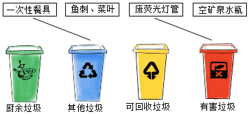
【答案】鱼刺、菜叶——厨余垃圾;空矿泉水瓶——可回收垃圾
【解析】
【详解】生活垃圾一般可分为四大类：可回收垃圾、厨余垃圾、有害垃圾和其他垃圾。根据垃圾的分类方法可知鱼刺、菜叶属于厨余垃圾；厨房垃圾包括剩菜剩饭、骨头、菜根菜叶等食品类废物，经生物技术就地处理堆肥，每吨可生产0．3吨有机肥料；
有害垃圾包括废电池、废日光灯管、废水银温度计、过期药品等，这些垃圾需要特殊安全处理；其他垃圾包括除上述几类垃圾之外的砖瓦陶瓷、渣土、卫生间废纸等难以回收的废弃物，采取卫生填埋可有效减少对地下水、地表水、土壤及空气的污染，可回收垃圾包括纸类、金属、塑料、玻璃等，通过综合处理回收利用，可以减少污染，节省资源。故鱼刺、菜叶——厨余垃圾；空矿泉水瓶——可回收垃圾。
14.二氧化氯（ClO2）是安全消毒剂，杀菌能力优于Cl2，可由Na ClO2与Cl2反应制得。
（1）配平化学方程式：__12___。
（2）71gCl2完全反应，理论上最多生成ClO2的质量为_______g。
【答案】 (1). 2 (2). 2 (3). 135
【解析】
【详解】（1）化学方程式的配平，就是在书写化学方程式时，在式子左右两边的化学式前面配上适当的化学计量数，使得每一种元素的原子总数相等，故该化学方程式配平为：2122；
（2）解：设理论上最多生成ClO2的质量为x
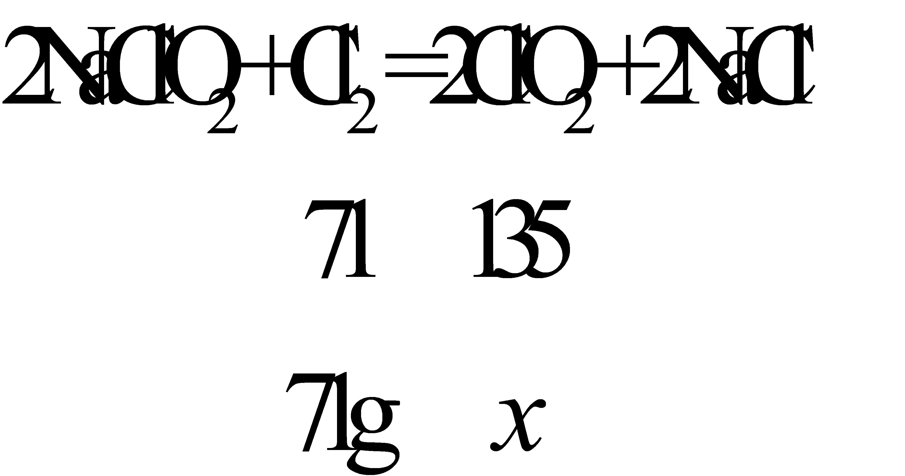
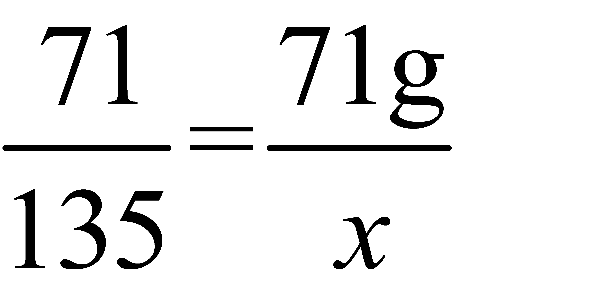
x=135g
答：设理论上最多生成ClO2的质量为135g。
15.我国大力推广在盐分高，pH>9的土壤中种植海水稻。
（1）pH>9的土壤呈___（填“酸性”或“碱性”）。
（2）大米中主要含有的营养素是______。
（3）稻壳可用于制纳米SiO2，SiO2属于_______（填序号）。
A 氧化物 B 化合物 C 混合物
【答案】 (1). 碱性 (2). 糖类 (3). AB
【解析】
【详解】（1）土壤pH就是指土壤的酸碱度。酸碱度的量程为0至14，依据pH从小到大分别为酸性、中性和碱性，pH值为7时则表示土壤呈中性，小于7为酸性，而大于7则为碱性。因此pH>9的土壤呈碱性。
（2）大米中含糖类75%左右，蛋白质7%-8%，脂肪1.3%-1.8%，并含有丰富的B族维生素等。因此大米中主要含有的营养素是糖类。
（3）氧化物是由两种元素组成，其中一种是氧元素的化合物(即由氧元素和另一种元素组成的化合物)。SiO2符合氧化物的特征，同时氧化物也是一种化合物，因此SiO2也是化合物。因此SiO2属于A 氧化物，B 化合物。此处填AB。
〖科普阅读题理解〗
16.阅读下面科普短文。氢能是公认的高热值清洁能源。目前，氢气的来源如图1所示。化石资源制氢最为成熟。水煤气变换反应：
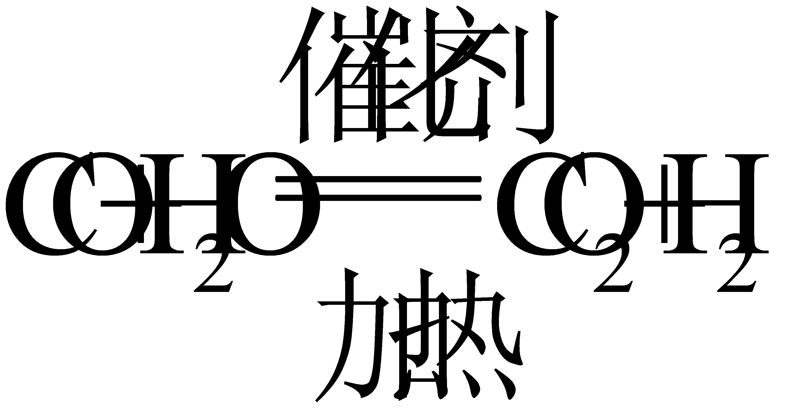
，是化石资源制氢过称中的重要反应之一。北京大学团队研究了在不同温度下，多种催化剂对水煤气变换反应中CO转化率的影响，结果如图2所示。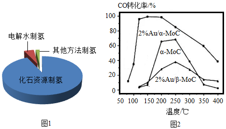
电解水制氢过程简便，但造价高昂，利用太阳能制氢是未来的发展方向，“人造太阳”的探索也就应运而生。我囯“人造太阳”大科学装置“东方超环”利用的是核聚变，当氘、氚核聚变温度达到1亿摄氏度、持续时间超过1000秒，就能形成持续反应，为水分解提供能量。2020年4月，“东方超环”实现了1亿摄氏度运行近10秒，取得重大突破。除了氢气的生产，其运输、储存和利用等仍面临诸多挑战，需要人们不断探索。
依据文章内容回答下列问题。
（1）目前氢气的主要来源是_____。
（2）图2中，催化剂为2%Au/a-MoC时，CO转化率和温度的关系是_______。
（3）根据下表信息可知氘、氚都属于氢元素，理由是________。
（4）下列说法正确的是___（填序号）。
A a-MoC可使CO转化率接近100%
B 水电解制氢的不足是造价高昂
C 利用太阳能制氢是未来发展方向
D “东方超环”利用核聚变提供能量
【答案】 (1). 化石资源制氢 (2). 在其他条件相同时，温度范围在50℃~400℃之间，CO转化率随温度的增大先上升再下降 (3). 氘和氚的质子数为1，属于相同质子数的一类原子，都属于氢元素 (4). BCD
【解析】
【详解】（1）目前，化石资源制氢最为成熟，目前氢气的主要来源是化石资源制氢；
（2）图2中，催化剂为2%Au/a-MoC时，CO转化率和温度的关系是在其他条件相同时，温度范围在50℃~400℃之间，CO转化率随温度的增大先上升，达到一定数值后，温度继续升高时，转化率又下降；
（3）元素是质子数相同的同一类原子的总称，根据表中信息可知氘、氚都属于氢元素，理由是质子数相同，都是1；
（4）A、由图可知，催化剂为2%Au/a-MoC时，在一定温度范围内，可使CO转化率接近100%，选项错误；
B、由题中信息可知，电解水制氢过程简便，但造价高昂，选项正确；
C、利用太阳能制氢是未来发展方向，选项正确；
D、我囯“人造太阳”大科学装置“东方超环”利用的是核聚变，当氘、氚核聚变温度达到1亿摄氏度、持续时间超过1000秒，就能形成持续反应，为水分解提供能量。选项正确。
故选BCD。
〖生产实际分析〗
17.CuO是某种无机胶黏剂的组分之一，制备的部分流程如下图。
已知：CuO难溶于水。
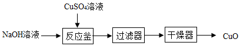
（1）反应釜中发生的反应有：①
②，其中属于复分解反应的是____（填“①”或“②”）。
（2）过滤器分离出的滤液中一定含有的溶质是__________。
【答案】 (1). ① (2). Na2SO4
【解析】
【分析】
复分解反应是两种化合物相互交换成分生成另两种化合物，分解反应是一种物质生成两种或两种以上物质的反应。
【详解】（1）①，反应符合两种化合物相互交换成分生成另两种化合物，属于复分解反应；②，反应符合一种物质生成两种物质，符合一变多，属于分解反应，故属于复分解反应的是①。
（2）反应釜中生成硫酸钠、氧化铜和水，故过滤器分离出的滤液中一定含有的溶质是硫酸钠，化学式为Na2SO4。
18.从氯碱工业产生的盐泥中回收BaSO4，其主要工艺流程如下图。
已知：①盐泥的主要成分为BaSO4、NaCl、Mg（OH）2和CaCO3。
②BaSO4难溶于水，不与盐酸反应。
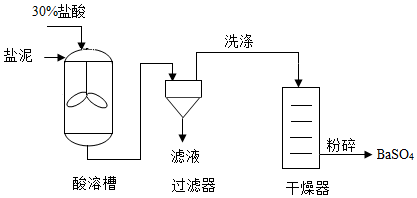
（1）除去NaCl，利用的性质是____。
（2）酸溶槽中发生中和反应的化学方程式为____。
（3）过滤器中分离出来的固体是____。
【答案】 (1). NaCl可溶于水 (2). (3). BaSO4
【解析】
【详解】（1）除去盐泥中的NaCl，是利用了NaCl可溶于水的性质；
故填：NaCl可溶于水；
（2）中和反应是酸与碱作用生成盐和水的反应，所以酸溶槽中发生的中和反应是盐泥中的氢氧化镁与所加的盐酸反应生成氯化镁和水，化学方程式为：；
故填：；
（3）盐泥的主要成分为BaSO4、NaCl、Mg（OH）2和CaCO3，NaCl可溶于水，Mg（OH）2和CaCO3能与加入的盐酸反应，生成能溶于水的氯化镁和氯化钙，BaSO4难溶于水，不与盐酸反应，所以过滤器中分离出来的固体是BaSO4；
故填：BaSO4。
【点睛】解答流程题目，理解各个流程的主要作用是什么，结合所学知识和题目所给的信息，便能解答。
〖基本实验及其原理分析〗
19.请从A或B两题中任选一个作答，若均作答，按A计分。
A氧气的制取与性质 | B二氧化碳的制取与性质 |
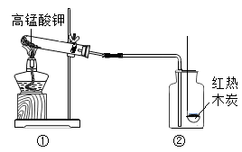
| 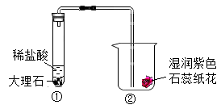
|
（1）①中反应的化学方程式为__________。
（2）②中观察到的现象是___________。
【答案】 (1). （） (2). 木炭燃烧，发白光，放热（湿润紫色石蕊纸花变红）
【解析】
【详解】A、（1）高锰酸钾在加热的条件下反应生成锰酸钾、二氧化锰和氧气，该反应的化学方程式为：；
（2）木炭在氧气中燃烧发出白光，放出热量。
B、（1）大理石的主要成分是碳酸钙，碳酸钙与稀盐酸反应生成氯化钙、二氧化碳和水，该反应的化学方程式为：；
（2）二氧化碳能与水反应生成碳酸，碳酸显酸性，能使紫色石蕊试液变红，故湿润紫色石蕊纸花变红。
20.下列是两个关于水的实验。
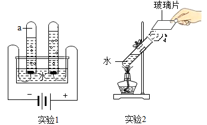
（1）实验1，反应的化学方程式为________。
（2）下列说法正确的是______（填序号）。
A 实验1，试管a中得到的气体能燃烧
B 实验1，反应前后原子的种类、个数均改变
C 实验2，水变化前后分子的种类不变
【答案】 (1).
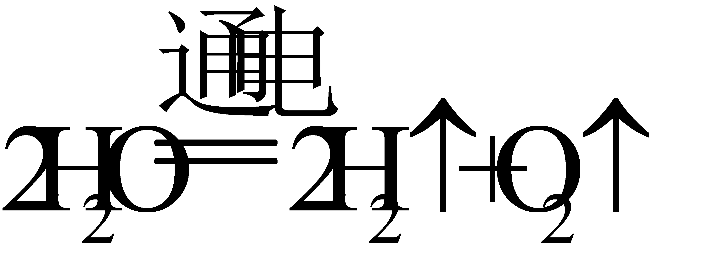
(2). AC【解析】
【详解】（1）通过观察实验1为水电解的实验，水电解的反应的化学方程式为。
（2）A、电解水实验中，与电源负极相连的试管中产生氢气(H2)，与电源正极相连的试管产生氧气(O2)，a为负极产生的氢气，氢气能燃烧，正确，符合题意。
B、原子是化学反应过程中的最小微粒，反应前后原子的种类、个数均不发生改变，错误，不符合题意。
C、实验2为加热水生成水蒸气的实验，是物理变化，没有新物质生成，水由液态变为气态，变化前后分子的种类不变，正确，符合题意。因此填AC。
21.补全实验报告。
装置及操作 | 现象 | 解释或结论 |
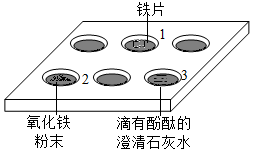
| （1）向1中滴加______溶液 | 铁片上附着红色固体，溶液颜色变浅 | Fe的金属活动性比Cu的强 |
（2）向2中滴加盐酸 | 固体减少，得到黄色溶液 | 化学方程式：___ |
（3）向3中滴加足量盐酸 | ________ | Ca（OH）2能与盐酸反应 |
【答案】 (1). CuSO4或CuCl2（其他答案合理即可） (2). (3). 溶液由红色变为无色
【解析】
【详解】（1）现象：铁片上附着红色固体，溶液颜色变浅；结论：Fe的金属活动性比Cu的强，可知实验是铁和含铜的盐溶液反应生成铜，所以向1中滴加含铜元素的可溶性的盐溶液，如CuSO4或CuCl2（其他答案合理即可）；
（2）向2中滴加盐酸，固体减少，得到黄色溶液，发生的反应为氧化铁和盐酸反应生成氯化铁和水，化学方程式为；
（3）氢氧化钙溶液显碱性，能使无色酚酞试液变红，而在中性或酸性溶液中，酚酞试液为无色，向3中滴加足量盐酸，溶液由红色变为无色，说明Ca（OH）2能与盐酸反应。
22.从下图选择仪器，配置60g溶质质量分数为10%的NaCl溶液。
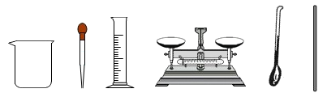
（1）需要称量NaCl的质量为____g。
（2）量取水用到的仪器有____（写名称）。
（3）从配好的溶液中倒出10g，其中溶质和溶剂的质量比为_____。
【答案】 (1). 6 (2). 100mL量筒、胶头滴管（顺序可变） (3). 1:9
【解析】
【详解】（1）溶质的质量等于溶液的质量乘以溶质的质量分数 ，配制60g溶质质量分数为10%的NaCl溶液，需要称量NaCl的质量为60g×10%=6g；
（2）量取一定量液体时应先倾倒至接近刻度，然后用胶头滴管滴加至刻度，所用量筒的量程应略大于或等于量取液体的体积，量取水用到的仪器有100mL量筒、胶头滴管；
（3）溶液是均一的，从配好的溶液中倒出10g，溶液的溶质质量分数不变，其中溶质和溶剂的质量比为10:90=1:9。
23.验证可燃物燃烧的条件。已知：白磷、红磷的着火点分别是40℃、240℃。
装置（夹持仪器已略去） | 步骤及现象 |
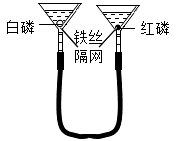 | Ⅰ将一定量白磷、红磷分別浸入80℃热水中（如左图所示）。白磷、红磷均不燃烧 Ⅱ.升高右侧漏斗至红磷露出水面。红磷不燃烧 Ⅲ.升高左侧漏斗至白磷露出水面。白磷燃烧 |
（1）Ⅰ中白磷不燃烧的原因是________。
（2）对比Ⅱ和Ⅲ，可验证可燃物燃烧的条件是______。
【答案】 (1). 白磷未与氧气接触 (2). 燃烧需要温度达到可燃物的着火点
【解析】
【详解】（1）Ⅰ中白磷达到了着火点，但是隔绝了氧气，故不燃烧的原因是：白磷未与氧气接触；
（2）Ⅱ、升高右侧漏斗至红磷露出水面。红磷与氧气（或空气）接触，红磷不燃烧，是因为没有达到红磷的着火点；
Ⅲ、升高左侧漏斗至白磷露出水面。白磷与氧气（或空气）接触，且达到了着火点，白磷燃烧，由此可得出，燃烧需要温度达到可燃物的着火点。
〖科学探究〗
24.酸钙为白色固体，易溶于水，可作食品防霉剂，国家标准规定了其用于制作面食、糕点时每千克面粉中的最大使用量。小组同学实验探究其性质和防霉的效果。
I.探究丙酸钙的性质
【进行实验】用下图裝置（夹持仪器已略去）完成实验，记录如下：
序号 | ① | ② |
装置 | 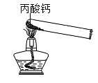 | 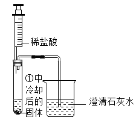
|
现象 | 试管内壁有水雾 | 注入酸后，有气泡产生，石灰水变浑浊 |
【解释与结论】
（1）②中现象说明有CO2产生。CO2与石灰水反应的化学方程式为________。
（2）查阅资料得知丙酸钙与盐酸反应无气体生成。由实验②可得出的结论是_______。
Ⅱ.探究丙酸钙防霉的效果
【进行实验】分别按下列①~⑧的配方蒸制8个馒头，冷却后置于密封袋中，记录如下：
组别 | 第1组 | 第2组 |
序号 | ① | ② | ③ | ④ | ⑤ | ⑥ | ⑦ | ⑧ |
配方 | 面粉/ g | 50 | 50 | 50 | 50 | 50 | 50 | 50 | 50 |
酵母/ g | 0.75 | 0.75 | 0.75 | 0.75 | 0.75 | 0.75 | 0.75 | 0.75 |
蔗糖/ g | 0 | 0 | 0 | 0 | 5 | 5 | x | 5 |
丙酸钙/g | 0 | 0.06 | 0.10 | 0.15 | 0 | 0.06 | 0.10 | 0.15 |
开始发霉时间 | 第3天 | 第4天 | 第5天 | 第6天 | 第3天 | 第4天 | 第5天 | 第6天 |
【解释与结论】
（3）设计第1组实验的目的是____。
（4）第2组，⑦中x为_______。
（5）对比第1组、第2组实验可得到的结论是______。
【反思与评价】
（6）某同学认为“制作面食、糕点时，丙酸钙用量越大越好”你是否同意此观点，并说明理由：_____。
【答案】 (1). (2). 丙酸钙受热后产生的物质能与稀盐酸反应且生成二氧化碳 (3). 探究丙酸钙的质量大小是否对于丙酸钙防霉效果有影响 (4). 5 (5). 在加入面粉质量相同，酵母质量相同时以及其他条件相同时，有无蔗糖对丙酸钙防霉效果无影响 (6). 不同意。国家标准规定了丙酸钙用于作面食、糕点时每千克面粉中的最大使用量，说明过量使用可能有害。故不是越多越好
【解析】
【详解】Ⅰ、解释与结论：
（1）二氧化碳与氢氧化钙反应生成碳酸钙和水，该反应的化学方程式为：；
（2）查阅资料得知丙酸钙与盐酸反应无气体生成，丙酸钙加热后生成的固体却能与稀盐酸反应生成二氧化碳气体，故可得出：丙酸钙受热后产生的物质能与稀盐酸反应且生成二氧化碳；
Ⅱ、解释与结论：
（3）由表中数据可知，第1组实验，其它因素相同，只有丙酸钙的质量不同，故该实验是探究丙酸钙的质量大小是否对于丙酸钙防霉效果有影响；
（4）由表中数据可知，第2组与第1组其它数据相同，只是第1组无蔗糖，而第2组有蔗糖，且第2组加入蔗糖的质量应相同，故x=5；
（5）由表中数据可知，在加入面粉质量相同，酵母质量相同时以及其他条件相同时，有无蔗糖，开始发霉的时间相同，故说明在加入面粉质量相同，酵母质量相同时以及其他条件相同时，有无蔗糖对丙酸钙防霉效果无影响；
反思与评价：
（6）由题干信息可知，丙酸钙属于食品防腐剂，且国家标准规定了丙酸钙用于作面食、糕点时每千克面粉中的最大使用量，说明过量使用可能有害。故不是越多越好。
故填：不同意；国家标准规定了丙酸钙用于作面食、糕点时每千克面粉中的最大使用量，说明过量使用可能有害。故不是越多越好。